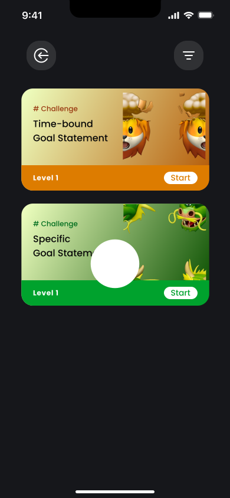
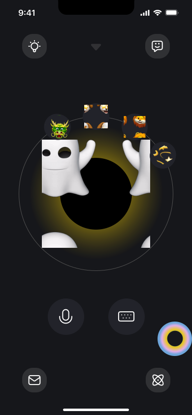

Table of Contents
2 Month (Spring 2024)
Learning Design
Concept Prototyping
UI Design
Learning the knowledge, skills and motivation behind goal accomplishments
Advisor: Stacie Rohrbach
Team: Sherry Wang
OVERVIEW
A Smart AI Agent that communicates information
PlanPal is an AI-powered learning tool designed to help individuals learn how to set and achieve their personal goals. With a focus on personalized guidance and motivation, PlanPal introduces a team of 4 AI coaches - Master Loong, Frankie, Paw and Whisper - each with unique interaction styles and motivational techniques, to cater to the diverse needs and preferences of users. PlanPal Leverages multiple learning theories (e.g. Scaffolding, Feedback, Attention, Memory)and is designed based on a comprehensive learning model.
ROLE
Learning Design/Concept Prototyping
As part of a two-person team, my role spans from research to ideation to design:
-
Learning Experience Design: Crafted engaging learning experiences by defining learning objectives, creating scaffolded content, and designing interactive activities to support effective goal-setting and achievement.
-
Concept Prototyping: Developed interactive prototypes using Figma to demonstrate the core functionalities and user flow of PlanPal, allowing for iterative testing and refinement of the learning design.
-
User Interface Design: Designed intuitive and visually appealing user interfaces that align with the PlanPal brand and enhance the overall user experience, ensuring ease of navigation and clear communication of learning content.
1. Motivate, Learn, and Achieve with Personalized Goal Gurus
PlanPal is an AI-powered learning tool designed to revolutionize the way individuals set and achieve their personal goals. With a focus on personalized guidance and motivation, PlanPal introduces a team of 4 AI coaches (Master Loong the dragon, Frankie the lion, Paw the puppy and Whisper the spirit), each with unique interaction styles and motivational techniques, to cater to the diverse needs and preferences of its users. By leveraging advanced AI technologies, PlanPal offers tailored feedback, progress tracking, and adaptive learning experiences to keep users engaged and committed to their goals (e.g. getting in shape).
Motivation Style
PlanPal helps users identify their unique motivation style through a personalized assessment, enabling the system to tailor guidance and support to be personalized.
Self-assessment
Users complete a self-assessment to evaluate their current fitness level, allowing PlanPal to create a customized starting point for their fitness journey.

SMART Goal Setting
PlanPals guide users through setting Specific, Measurable, Achievable, Relevant, and Time-bound (SMART) goals, ensuring goals are well-defined and realistic.
Goal Breakdown
The "Progress Track Galaxy" feature visually breaks down users' SMART goals into smaller, manageable milestones, providing a clear roadmap for success.
Goal Tracking
Users can easily monitor their daily progress and tasks within the "Progress Track Galaxy," helping them stay on track and accountable.
Progress Log
Users can log their progress and engage in motivational conversations with their AI coaches through a dedicated group chat feature.
Community
The community allows users to view the progress of other friends and participate in peer evaluations, fostering a sense of collaboration and support.
Daily Challenge
PlanPal presents users with daily challenge questions to reinforce their learning, encourage reflection, and promote a growth mindset.
Weekly Email
PlanPal sends users a weekly email summarizing their progress and highlighting key learning outcomes, providing a regular source of motivation and reflection.
Notification/Widgets
PlanPal utilizes notifications and widgets to send timely reminders, updates, and encouragement, ensuring that users remain engaged and committed to their goals.
Exploration
Learners can quickly access supplementary information that is helpful but not mandatory, allowing them to deepen their understanding of their goal at their own pace.
Quick Reference
A quick reference to the SMART framework is always available on the screen, providing a convenient reminder of the key components of SMART goals.
2. The New Year Resolution that We Never Follow through
3. The Learning Science that Backs up the Design
4. Does AI Really Help? The User testing and Outcomes
5. Reflection: Learning in the Age of AI
MORE PROJECTS
YUPI
YUPI is a smart, centralized platform designed for urgent-care services that makes doctor-patient interactions clearer and more effective than ever before.

Bumble Vibely
The Vibely project transformed Bumble's user experience by introducing a map feature that facilitates connections through real-time, location-based interactions.

PETSPHERE
PetSphere is a pet community social web application that connects pet owners and pet service providers. I worked as a UI designer and front-end/back-end developer for the project.

BIKELINK PRO
A semi-autonomous e-bike with interfaces that employs human-centered design methodologies and principles of typography, color, and composition to set paradigms for interactions.